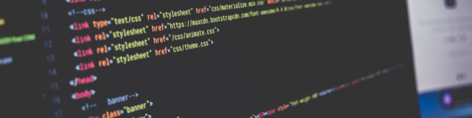

20 de Maio de 2023
O percurso ...

Já tinha bastante tempo que eu pensava em programar, decidi dar o
primeiro passo e escrever minhas linhas de código. Tive a oportunidade
de participar da NLW - Rocketseat, me diverti bastante, aprendi muito
sobre Hardskils e Softskils, aumentei mais ainda meus conhecimentos em
HTML, CSS, Git e Github. Sinto que esse será o primeiro de muitos
códigos criados por mim.